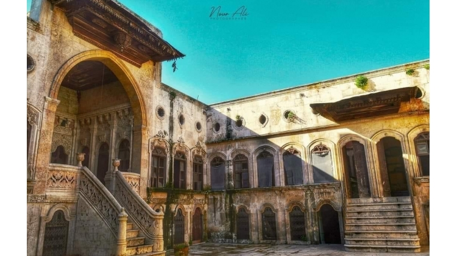

Halep kent dokusunun en ilgi çeken yanı geleneksel konut mimarisidir. Halep evlerinde eski doku incelendiğinde Anadolu’da benzer iklim ve sosyal yapıya sahip olduğu görülür. Organik sokak dokusu, sağır ve yüksek avlu duvarlarıyla çevrilidir. Ev mimarisini etkileyen ikilim, malzeme, gelenek, çevre, kültür ve sosyal hayat faktörleri, fiziki plana da yansımıştır. Halep geleneksel ev mimarisi Mezopotamya döneminden başlayarak İslam dönemine kadar varlığını sürdürmüştür.
Dünyanın en eski şehirlerinden biri olan Halep, Anadolu ile Mezopotamya ve Akdeniz ile İran arasındaki yolların kesişim noktasındadır. İpek Yolu’nun kavşağında olması, kentin sosyo-ekonomik yönden gelişmesini etkileyen en önemli etmen olmuştur. Halep, M.Ö. 64 yılına gelindiğinde Roma İmparatorluğu'nun Suriye eyaletinin sınırları içine alınmış ve Bizans dönemi boyunca iktisadi açıdan çok önemli bir yere sahip olmuştur. Halep’in İslam hakimiyetine girişi ise M.S. 637'de olmuştur. Daha sonra sırasıyla Emevi ve Abbasilerin egemenlik sahası içinde yer almıştır. Kent, 1086 yılında Anadolu Selçuklu Devleti’ne bağlanmıştır. Artuklular, Eyyubiler ve Moğol hakimiyetinin ardından 1516 yılında kent Osmanlı yönetimine girmiştir.
